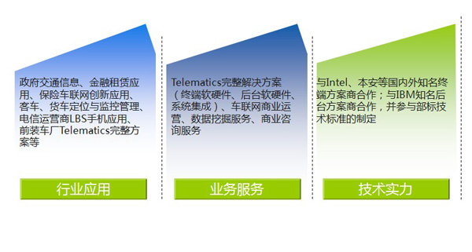

定位监控中心简介
- 中交兴路车联网定位监控中心以营运车辆监控管理和运营服务为基础，开展综合交通信息服务。面向政府相关监管部门需求，及针对客车、公交车的用车成本、用车效率、行车安全、绩效考核等管理需求，在现有运营平台的基础上，应用车载视频监控、油量检测、CAN数据采集等先进技术，结合先进的数据分析模型和成熟的客运业务过程管理经验，搭建了自主知识产权的“客车公共服务平台”和“运营服务平台”,该平台是北京地区首批通过国家合规审查的经营性企业监控平台。截止到目前，入网车辆超过100000辆，并已经与郑州宇通、厦门金旅、上海申龙、扬州亚星、丹东黄海、陕汽、中集等厂家进行终端前装战略合作。管理平台和智能终端领域知识产权已积累7项发明专利和2项软著，中交兴路车联网定位监控中心已组建拥有丰富研发经验和工程实践经验的项目团队，其中引进数位海外留学人才。在湖南、贵州、河北、江西、海南、重庆等地设有分公司或办事机构，致力于成为中国一流的商用车车联网服务提供商。
- 